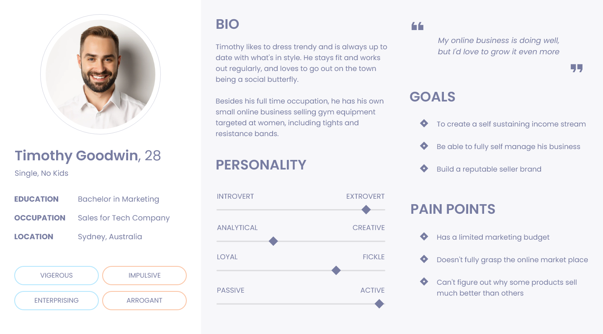
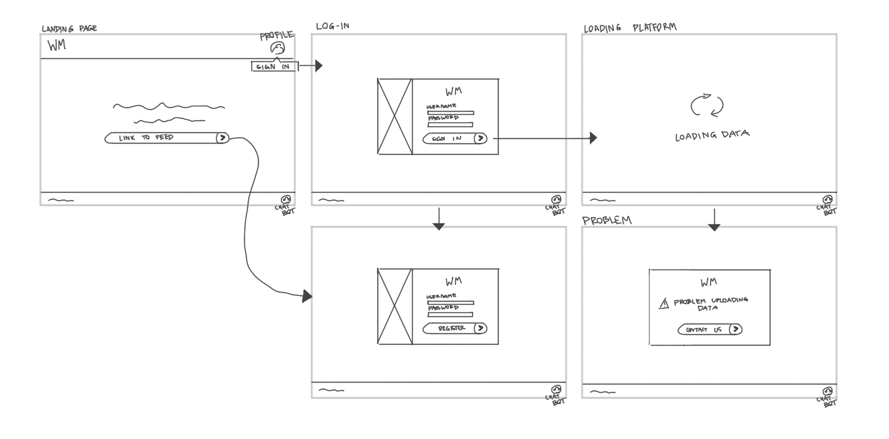
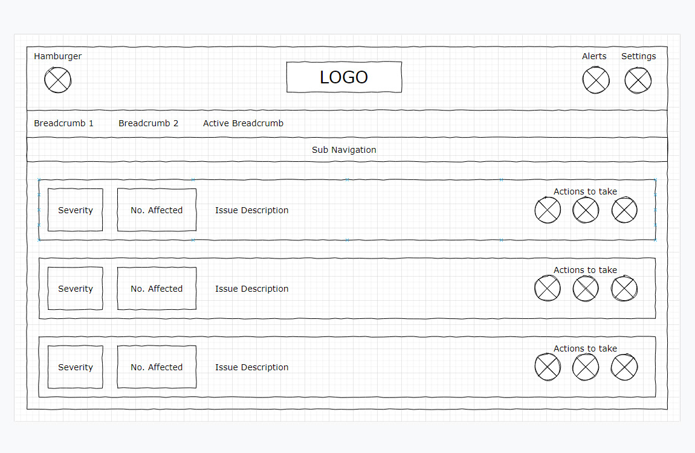
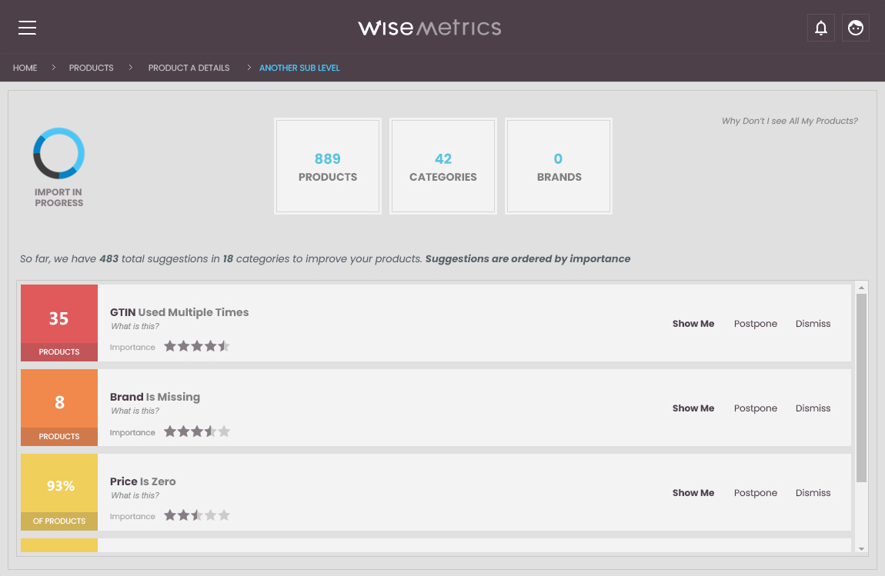
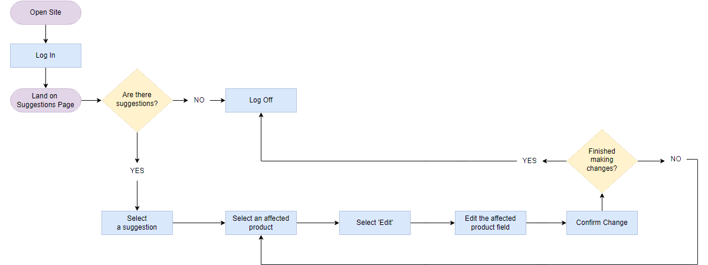
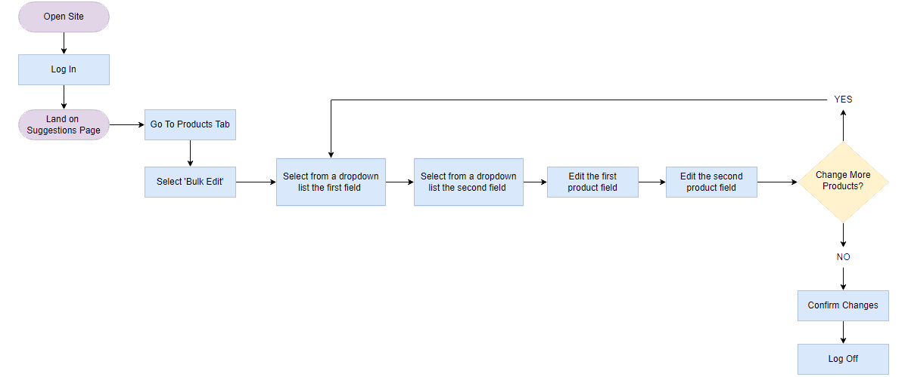
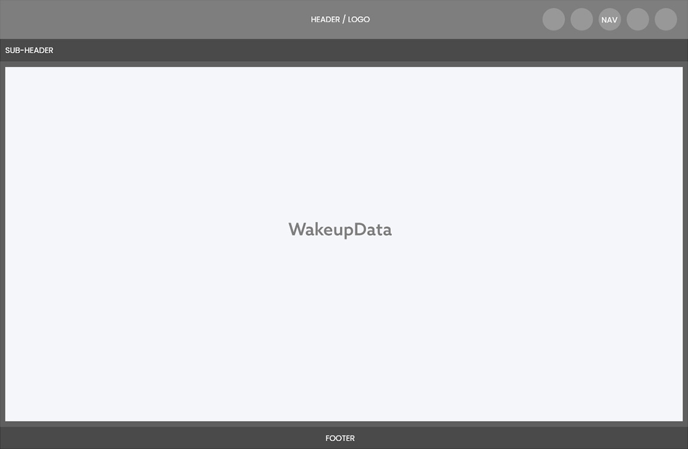
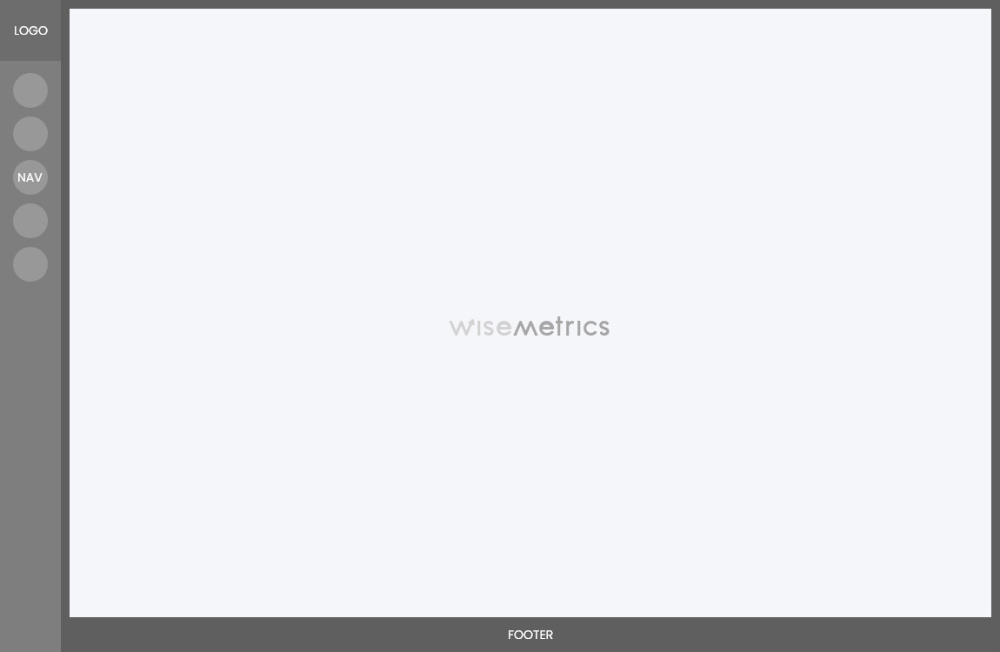
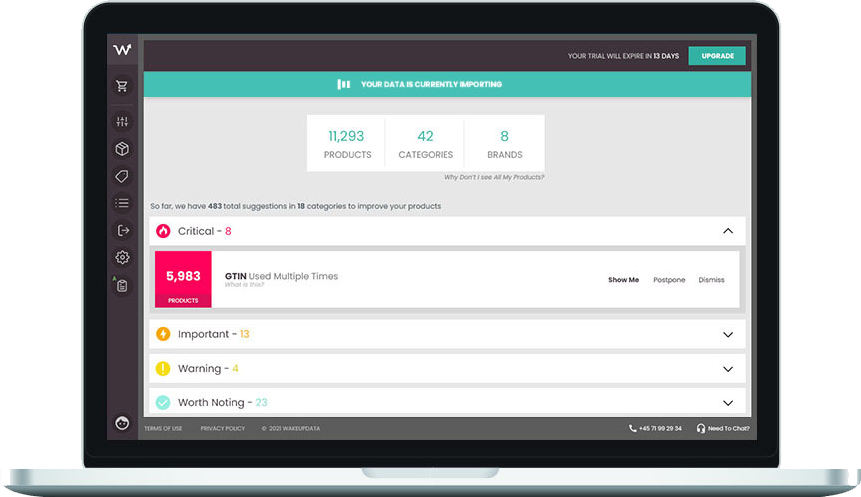

WakeupData · B2B SaaS
WiseMetrics: turning data overwhelm into a clear path to ROI
A standalone product that gives e-commerce merchants specific, actionable suggestions for improving their Google Shopping feeds — instead of just telling them something's wrong.
A data-quality problem most merchants didn't know how to name
E-commerce merchants and marketers are often held back from converting more sales by low-quality product data feeds. Most are aware something's off — they just don't know what to fix, or how.
WakeupData is a data-feed optimisation platform for Google Shopping, Facebook Dynamic Ads, Amazon, and hundreds of other channels, serving customers from sole traders to large retail groups like Salling Group. Their goal: improve customers' return on ad spend by improving how their products show up online.
Generic feed management couldn't give specific answers
WakeupData's existing product, the WakeupData Hub, let customers manage data feeds centrally and deploy variations across channels — but it had no way to tell users exactly what to change to improve quality, because it had to support feed formats and purposes far too broad to give targeted advice.
With Google Shopping controlling close to 29% of e-commerce ad share at the time and Amazon a close second, our CTO proposed something narrower by design: a separate product purpose-built for Google Shopping feeds, specific enough to give real, actionable suggestions. The goal was to let customers fix their own data instead of relying on a Customer Success Manager to do it for them — a meaningful operational cost we were trying to remove.
22 interviews, three recurring frustrations
I interviewed 22 existing WakeupData customers, selected for engagement with our product, recency of onboarding, or heavy reliance on Google Shopping feeds specifically. Larger organisations often had in-house teams or agencies dedicated to feed management — a luxury most smaller sellers couldn't afford. Across the board, though, everyone wanted the same thing: better visibility for their listings, whether they sold one product category or a dozen.
I used these interviews to build a small set of personas, anchoring most design decisions around "Timothy," an independent seller managing his own feed with no dedicated support.

Borrowing familiarity, then deliberately breaking from it
The product needed its own name, independent of WakeupData — the team landed on "WiseMetrics" after a brainstorm and vote. Early wireframes focused on two things: the data-integration and sign-up flow, and the general shape of the application.
My first instinct was to mirror WakeupData Hub's layout — same header, breadcrumb, and navigation positions — so existing Hub users would recognise the new interface instantly.


Two pieces of feedback shaped the higher-fidelity design. Engineering flagged that users had no way to tell whether they were looking at a stale feed or a freshly processed one — so every suggestion needed a visible processing state. And to avoid relying on colour alone for severity (a colour-blind accessibility issue), I gave each suggestion a star rating across an 11-point scale, with half-intervals.

Mapping the two most common flows
Working with engineering, I mapped two technically feasible flows that covered the most common tasks: acting on a single suggestion, and bulk-editing two fields across multiple products at once.


What testing actually revealed
I ran moderated usability sessions with customers from the original interviews, using an interactive Adobe XD prototype shared over a video call. The core workflow tested well — but a recurring comment surfaced a different problem entirely.
The visual similarity I'd deliberately built in to ease the learning curve had backfired into brand confusion. With stakeholder buy-in, I explored a more distinct direction: top navigation vs. side navigation, soft colours vs. high contrast, full logo vs. icon mark — effectively two products with their own visual identity, rather than one wearing the other's clothes.


Every colour combination used across the workflow was tested for readability and checked against WCAG contrast guidelines before sign-off.

After the new direction was approved internally, I went back to the original test group for a sanity check — the most common reaction was that it felt "fresher" and "more futuristic." I then built the front end myself in ASP.NET, working against API calls written by the engineering team, and ran one final round of testing on a working prototype covering catalogue switching and account settings.
How it performed for customers
Results below reflect the combined performance of WakeupData Hub and WiseMetrics for two customers, year-on-year.
Kaufmann — fashion & apparel retailer
Legeakademiet — children's toys & gear
I'd put the result down to close planning and communication between design and engineering throughout, and — more than anything — the specific, unglamorous work of actually talking to the customers who'd be using it.